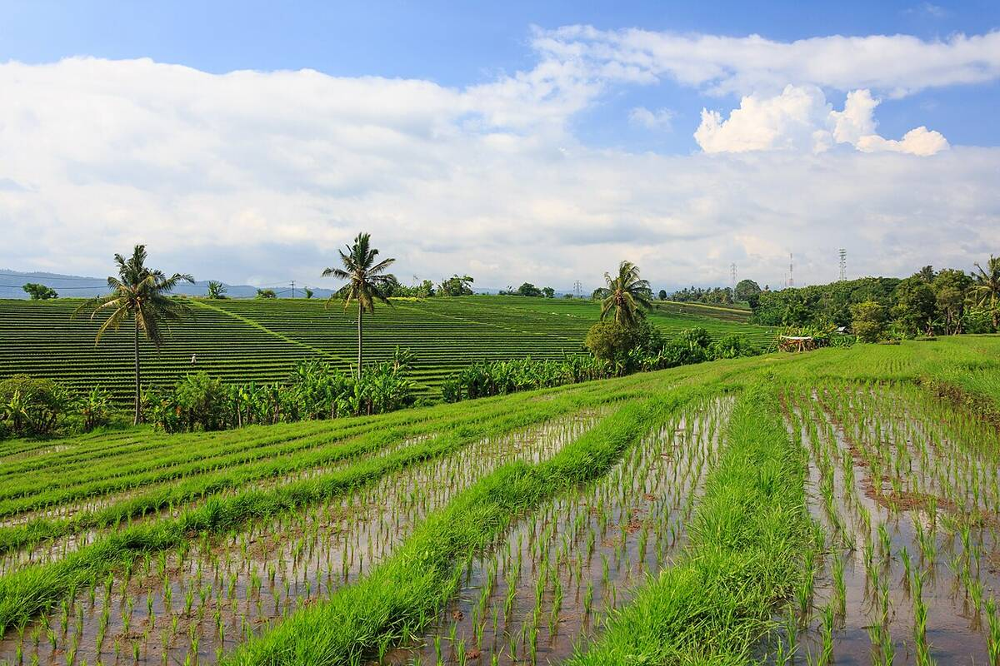

Up into the rice bowl
Airport → Jatiluwih → Munduk, about 100 km. Two nights in the hills.
Driver meets you at Ngurah Rai (DPS). Head straight north and out of the south's traffic.
North through Tabanan. Stop for lunch in Tabanan town: ayam betutu (slow-cooked spiced chicken) or nasi campur at a warung your driver likes.
Jatiluwih, the UNESCO-listed subak terraces. Skip the roadside café strip and walk the blue route (3.1 km) or the yellow route (2.3 km) out among the paddies and irrigation channels. Entry ≈ IDR 75–100k.
Over the Bedugul pass and along the ridge above Lakes Buyan and Tamblingan to Munduk. Evenings are cool, about 18 °C.
Dinner in Munduk village. Clove and coffee country, so try the local coffee.
The terraces still look good in drizzle, but the trails get slick in a downpour. Plan B is a soak at Penatahan hot spring, 20 min south of Jatiluwih (≈ IDR 50k).
In Dec 2025 farmers protested a crackdown on illegal buildings here, and visitor numbers dropped for weeks. It's back to normal in 2026, but a new central car park is due by end-2026, so expect some roadworks.